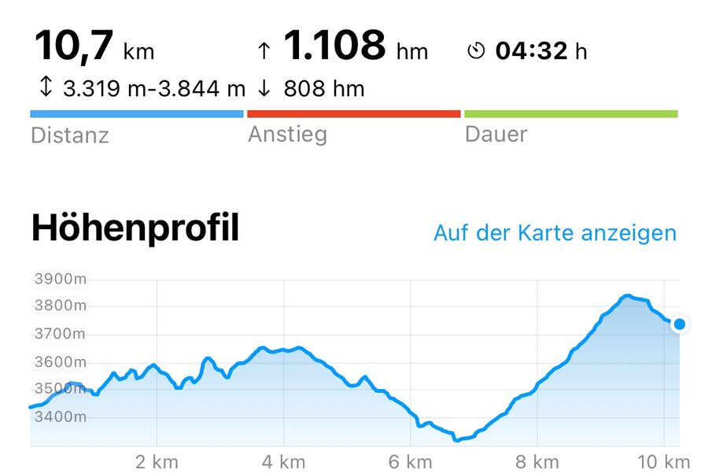
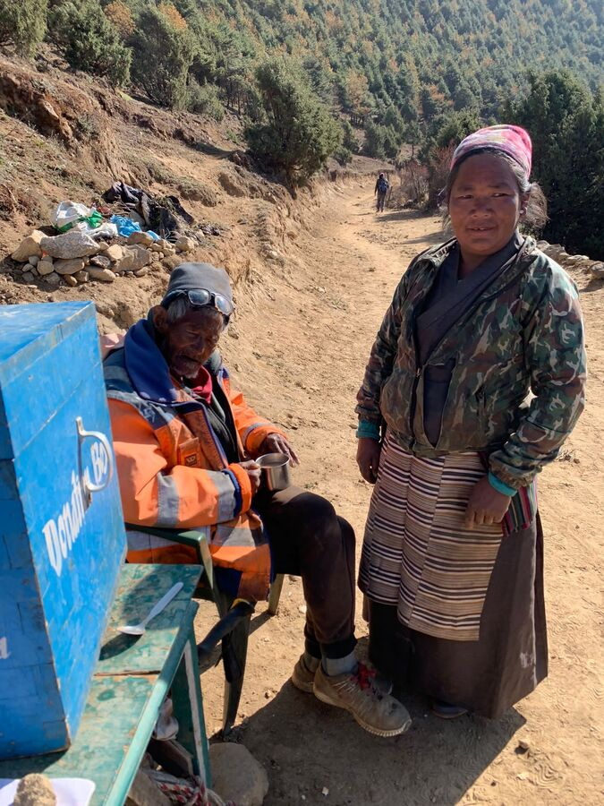
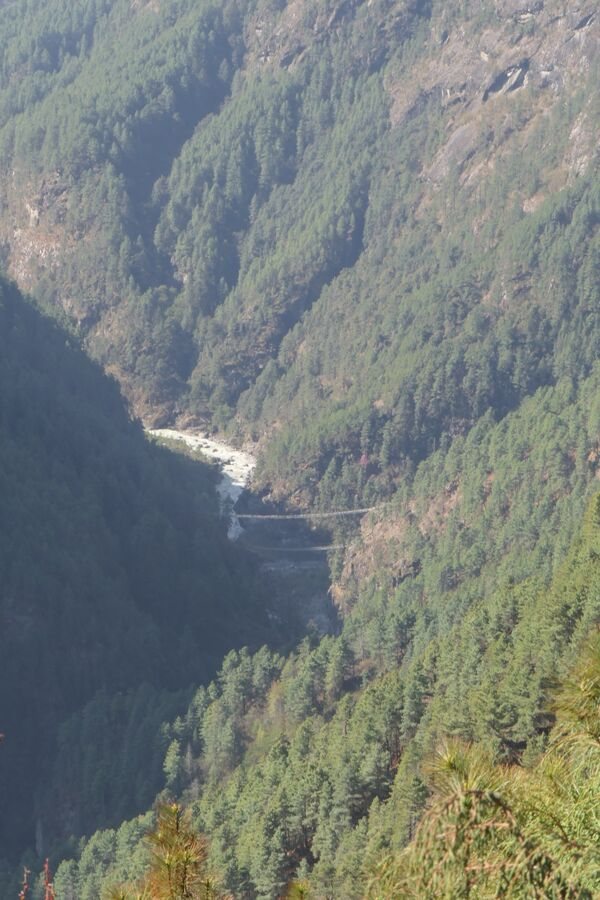
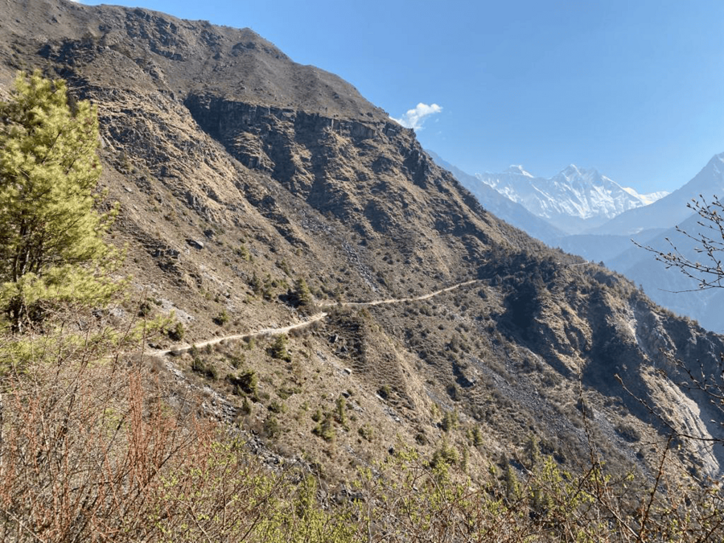
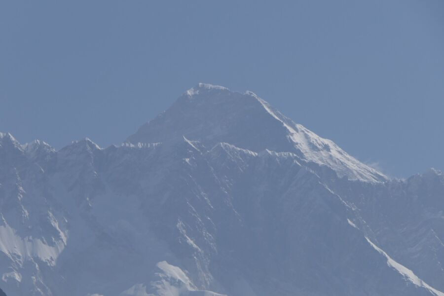
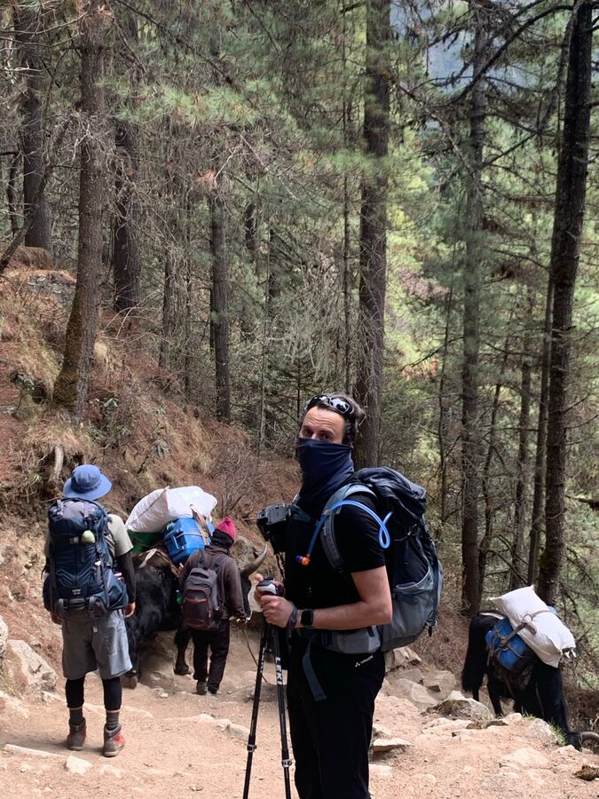
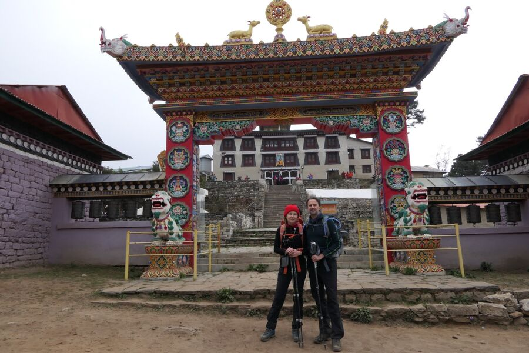
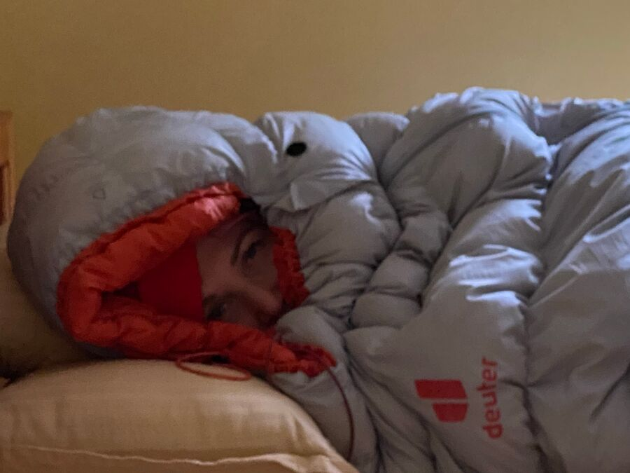

Unsere erste Akklimatisierung war abgeschlossen und wir fühlten uns beide gut. Heute hieß es nun: Die Tour beginnt richtig.
Das erste Zwischenziel war heute nicht – wie ursprünglich geplant – der Ort Phortse, sondern Deboche (sprich: Dibutsche). Der nächste Stopp wird planmäßig Dingboche sein, wir sparen durch die Änderung jedoch ein paar Kilometer.
Wir mussten heute daher aber noch einmal den Fluss Dudh Koshi – übersetzt „milchiger Fluss“ – überqueren. Was bedeutet, dass wir recht tief absteigen mussten, um danach noch höher aufzusteigen. Das Höhenprofil zeigt ganz schön, welcher Abschnitt mit Abstand der Schwerste war: Die letzten verdammten 2 Stunden.

Nach dem Frühstück gingen wir um 8 Uhr bei Kaiserwetter los. Trotzdem sind die ersten Schritte immer die Schlimmsten. Es ging natürlich wieder einmal direkt steil eine Treppe nach oben zum Stadtausgang von Namche Bazar. Nach ein paar Stufen ist man eigentlich schon am Ende und japst nach Luft wie ein Kettenraucher. Dann hat man schon mal richtig Puls.
Der Weg zweigte dann dankenswerterweise horizontal ab und die Sonne kam heraus, so dass ich nur im T-Shirt weiterlief. Dieser wirklich schöne Streckenabschnitt war von dem Einheimischen Ang Pasang Sherpa 30 Jahre lang in Eigenregie gebaut worden. Er ist inzwischen über 70 Jahre alt sitzt nun täglich mit der Bitte um eine kleine Spende am Wegesrand und begrüßt die Trekker alle persönlich.

Der Weg führte mit leichter Steigung, die immer wieder durch Gefälle unterbrochen wurde, parallel auf halber Höhe zwischen Gipfel und Fuss am Gebirge entlang. Es ging teilweise sehr steil nach unten, wo sich der milchige Fluss entlangschlängelt. Direkt zu Beginn konnten wir die Hillary-Brücke aus der Ferne erkennen. Diese hatten wir ja noch auf dem Weg nach Namche Bazar überquert und sie kam uns da noch so unheimlich hoch vor.

Die Vegetation hat sich auf dieser Höhe – ca. 3.500m – deutlich verändert. Es ist zwar alles noch sehr grün und es wachsen viele Bäume, aber man erkennt schon, dass der Wald lichter wird und es bald – wenn überhaupt – nur noch Buschwerk geben wird.

Und dann kam auch endlich der Moment, in dem sich der Everest uns zeigte. Man sah zwar nur seine etwas abgerundete Spitze, aber immerhin. Nun hatten wir unser Ziel förmlich vor Augen. Es war eine Art „Herr der Ringe“-Moment.

Nach ungefähr 4,5 km ging es dann zügig bergab. Es gab wieder mehr Bäume – übrigens überwiegend Nadelbäume – und auch sehr viele Rhododendron-Büsche bzw -Bäume, die unheimlich schön blühten. Der Abstieg war wieder übersät mit Felsen und Steinen, so dass man sich immer konzentrieren muss, wie man den nächsten Schritt macht. Runter ist nicht unbedingt einfacher als Hoch. Es wurde heute auch sehr staubig, weil wir teilweise über sandige Böden liefen.

Unten am Fluss angekommen gab es erst einmal das Mittagessen. Um 10:45 Uhr. Und dann ging es über die vorletzte Hängebrücke und zum Aufstieg des Tages, der uns alles abverlangen sollte.
2 Stunden ging es bergauf. Immer im Zick-Zack. Anfangs recht steil. Teils sandige Wege, die noch recht gut zu gehen sind, teils Steintreppen, bei denen man sofort aus der Puste kommt. Alle 2-3 Minuten hält man an, trinkt etwas und bringt den Puls wieder herunter. Und dann geht es weiter.
Oben auf ca. 3.900m angekommen erreichten wir das Kloster von Tengboche, das Dawa Choling Gompa. Es ist ein wichtiges tibetisch-buddhistisches Kloster, in dem ca. 25 Mönche leben. Ralf und ich waren 2009 schon dort gewesen und hatten sogar Fotoaufnahmen im Kloster von den betenden Mönchen machen dürfen. Jetzt allerdings ist dies verboten. Yeşim und ich gingen – ohne Schuhe – hinein und schauten uns kurz um. Es gibt dort eine große Buddha-Statue. 2 Mönche beteten.

Da es immer kühler wurde und sich Regen ankündigte, gingen wir zügig weiter nach Deboche, wo wir übernachten. Unsere Lodge heißt Himalayan Culture Home und wurde 2014 gebaut. Wir haben ein großes Zimmer mit eigenem Duschbad. Allerdings gibt es kein heißes Wasser. Egal. Das Highlight sind aber die beheizten Betten, in denen wir jetzt liegen.
Morgen geht es weiter hoch nach Dingboche. Die Etappe soll etwas weniger anstrengend sein als heute. Gute Nacht!
